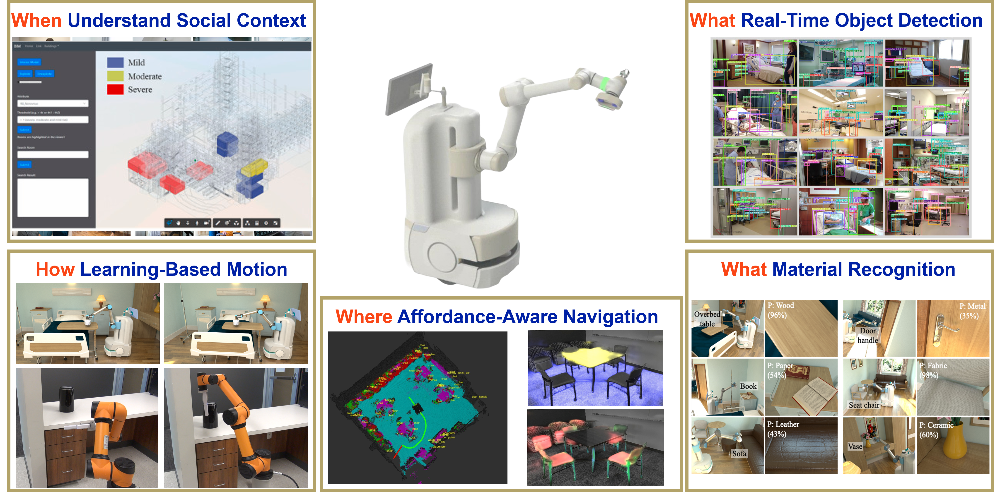

Multi-classifier information fusion for human activity recognition in healthcare facilities
Da Hu, Mengjun Wang, Shuai Li.
Frontiers of Engineering Management, 12(1), 99–116.
We investigate how human activity understanding, environmental perception, spatial reasoning, and robot motion can support adaptive disinfection in complex indoor environments.
Indoor environments vary in human activities, objects, surface materials, and spatial configurations. Effective robotic disinfection requires more than executing predefined motions.
We investigate how integrating social and physical perception with robotic motion can inform when, what, where, and how robots perform disinfection tasks.
02 — Research Approach
Our research examines four complementary capabilities:
Recognize activities to inform task timing.
Identify potential disinfection targets and surface properties.
Understand spatial configurations and accessibility.
Learn motions for interacting with different surfaces.

View full-resolution figure ↗03 — Research Vision
Our goal is to connect environmental understanding with task planning and physical action, enabling robots to adapt disinfection operations to changing indoor conditions.
Da Hu, Mengjun Wang, Shuai Li.
Frontiers of Engineering Management, 12(1), 99–116.
Da Hu, Shuai Li, Mengjun Wang.
Engineering Applications of Artificial Intelligence, 123, Part A, 106223.
Da Hu, Shuai Li.
Computer-Aided Civil and Infrastructure Engineering, 37(12), 1521–1546.
Da Hu, Hai Zhong, Shuai Li, Jindong Tan, Qiang He.
Building and Environment, 184, 107226.